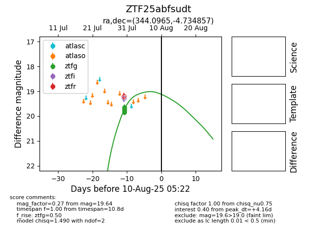

Target ZTF25abfsudt at 2025-08-10 05:22, see:
FINK: fink-portal.org/ZTF25abfsudt
Lasair: lasair-ztf.lsst.ac.uk/objects/ZTF25abfsudt
ALeRCE: alerce.online/object/ZTF25abfsudt
alt names
ZTF25abfsudt (ztf,fink)
coordinates:
equatorial (ra, dec) = (344.0965,-4.73486)
galactic (l, b) = (67.0498,-54.60278)
photometry
last ztfg=19.64
5 ztfg detections
